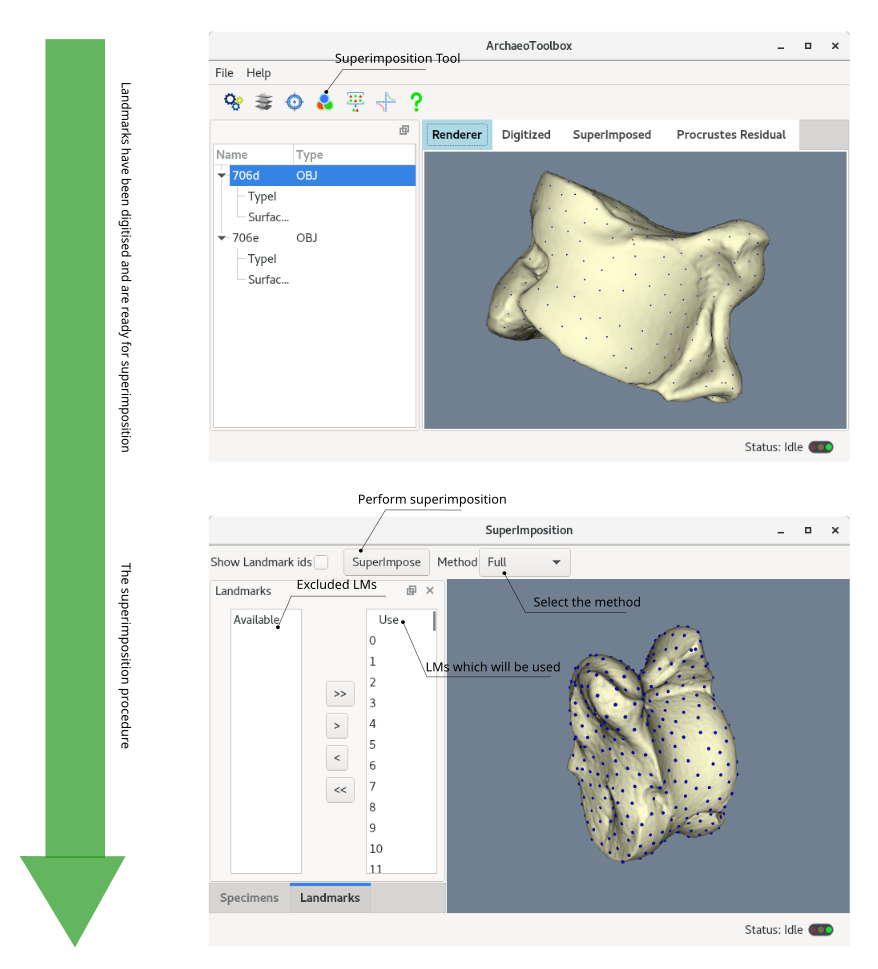
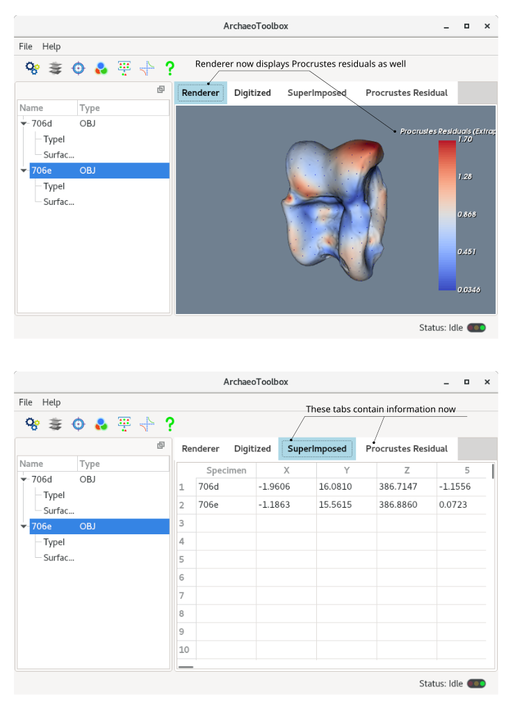

When the landmark digitisation process is over, the superimposition procedure is ready to be performed. ArchaeoToolbox has two methods for superimposition: 1- Full Procrustes and 2- Partial Procrustes Superimpositions. The choice is given at the superimposition window. In addition, you have an option to choose which landmarks can be used for superimposition. By the default, ArchaeoToolbox uses all the landmarks. As mentioned before, ArchaeoToolbox operates on the template, rather than the average (consensus) shape. Therefore, even one specimen is enough to run superimposition and more importantly, if you decide to add specimens after a superimposition, it does not affect the specimens which already have been superimposed.

When the superimposition process is over, you can closed the window and go back to the main window. It is worth mentioning that superimposition not only superimposes the landmarks, but it also superimposes the specimen geometries as well. In addition, Procrustes information such as Procrustes residual and residual magnitudes will be interpolated (or extrapolated if the LMs do not cover the whole geometry) and incorporated into the mesh file. At this moment, the renderer tab will depict the residual magnitudes. In addition, the Superimposed and the Procrustes Residuals tabs now contain relevant information. The superimposed landmarks and their Procrustes residual vector and magnitude can be exported to separate .csv files (file menu -> export data). The superimposed geometries (with the incorporated Procrustes information) can also be exported as .vtk file format (file menu -> export geometry). The .vtk files can be visualised by Paraview. It is important to remember that at this stage, the original geometries of superimposed specimens are gone and replaced with superimposed ones.
